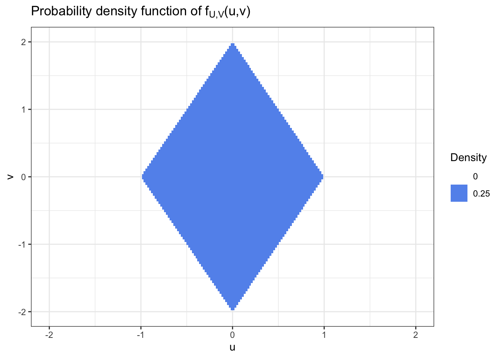

When random variables \(X\) and \(Y\) are not independent, they are dependent. However, the dependence may be weak, or it may be strong. Correlation is an important way of quantifying the dependence between random variables. Covariance is a related concept that also depends on the scales of \(X\) and \(Y\).
This is sometimes called the correlation coefficient, or Pearson’s correlation coefficient.
Example of correlations from Wikimedia
Note that in the center figure, division by zero (with \(\sigma_Y = 0\)) implies that the correlation is undefined. Notably, that scenario would have covariance.
It’s important to acknowledge that correlation is not going to relate necessarily to the slope of a regression line because we are standardizing by \(\sigma_Y\).
Properties of \(-1 \leq \rho_{X,Y} \leq 1\).
\(\rho_{X,Y} > 0\) implies a positive association (direct relationship); \(\rho_{X,Y} < 0\) implies a negative association.
If \(\sigma_X = 0\) or \(\sigma_Y = 0\), then \(\rho\) is undefiend.
\(|\rho_{X,Y}| = 1\) if and only if there exists \(a \neq 0\) and \(b \in \mathbb R\) such that \(P(Y = aX+b) = 1\). The sign of \(\rho\) equals the sign of \(a\).
Correlation captures the strength of the association in terms of how close to linear the relationship is, but not the magnitude of the slope.
If \(X\) and \(Y\) are independent, then \(\rho_{X,Y} = 0\). However, if \(\rho_{X,Y} = 0\) then \(X\) and \(Y\) are not necessarily independent.
If we want to show that independence \(\to \rho = 0\), we can see that by writing that we want to show:
Because \(X\) and \(Y\) are independent, and the expectation is over a product of a piece that’s just a function of \(X\) and another piece that’s just a function of \(Y\), we can write that
\[
\text{Cov}(X,Y) = \mathbb{E}\biggr( X - \mu_X \biggr)\mathbb{E}\biggr( Y - \mu_Y \biggr) = 0 \times 0 = 0.
\]
And if the means are not zero, we can apply that \(\text{Var}(X + b) = \text{Var}(X)\) and \(\text{Var}(Y + d) = \text{Var}(d)\), and by property 4, \(\text{Cov}(X + b, Y + d) = \text{Cov}(X,Y)\).
“the variance of \(X\) is the second moment of \(X\) minus the mean of \(X\) squared.”
If we’re doing linear regression with a single covariate, then the formula is \(Y = \alpha + \beta x + \varepsilon\). If we assume that \(x \perp\!\!\!\perp\varepsilon\), then
Often we want to know the distribution of a single random variable \(U = g_1(X,Y)\) that is a function of \((X,Y)\). However, this is hardly ever an invertible transformation. Fortunately, it turns out that we can still use the bivariate transformation technique as follows.
Introduce a new “auxiliary” variable \(V = g_2(X,Y)\), chosen to make calculations as easy as possible.
Compute \(f_{U,V}(u,v)\) from \(f_{X,Y}(x,y)\) using the bivariate transformation formula.
Then, integrate to get the marginal density of \(U\):
\[f_U(u) = \int f_{U,V} (u,v) \mathrm d v.
\]
Example: Transformation of Uniforms
Let \(X,Y \sim \text{Uniform}(-1,1)\) independently and suppose \(U = (X+Y)/2\) and \(V = X-Y\).
What is the joint pdf of \((U,V)\)? Also draw a picture of the joint pdf.
Since we’ll need this down the line, why don’t we go ahead and evaluate the elements of the Jacobian matrix:
One way to think through what these boundary conditions are is to treat these inequalities as four linear constraints.
Replacing \(u\) with \(x\) and \(v\) with \(y\), we would get linear constraints like \(x + y/2 = 1 \Longrightarrow y = 2 - 2x\).
u <-seq(-1,1,length.out=100)v <-seq(-2,2, length.out=100)uv_mat <-expand.grid(u,v)colnames(uv_mat) <-c('u', 'v')uv_mat$density <-with(uv_mat, 1/4* (u + v/2<1& u + v/2>-1& u-v/2<1& u-v/2>-1))suppressMessages(library(tidyverse))uv_mat |>ggplot(aes(x = u, y = v, fill =as.factor(density),alpha =as.factor(density))) +geom_tile() +scale_fill_manual(values =c('0'='white', '0.25'='cornflowerblue')) +scale_alpha_manual(values =c('0'=0, '0.25'=1)) +labs(fill ="Density") +theme_bw() +guides(alpha =guide_none()) +xlim(c(-2,2)) +ggtitle(expression(paste("Probability density function of f"["U,V"], "(u,v)")))

Example: Ratio of Standard Normals
To illustrate this technique, suppose \(X,Y \sim \mathcal N(0,1)\) independently. What is the distribution of \(X/Y\)?
Define \(U = X / Y\) and \(V = Y\). That is
\[u = g_1(x,y) = x/y
\]
\[v = g_2(x,y) = y.
\]
Introducing \(V = Y\) makes \(g\) invertible, so we can use the bivariate transformation formula.
The inverse is \(x = h_1(u,v) = uv\) and \(y = h_2(u,v) = v.\)
To find the marginal of \(U\), we need to integrate out \(V\). Making the change of variable \(t = v^2, \, \, \mathrm dt = 2v\mathrm dv\),
\[
\begin{aligned}
\int_0^\infty v \exp \left( -\frac{1}{2} v^2(1+u^2) \right) \mathrm dv & = \frac{1}{2} \int_0^\infty \exp \left( -\frac{1}{2} t (1+u^2) \right) \mathrm d t \\
& = \frac{1}{1 + u^2}.
\end{aligned}
\]
Therefore since \(f_{U,V}(u,v) = f_{U,V}(u,-v),\)
\[f_U(u) = \int_{-\infty}^\infty f_{U,V}(u,v) \mathrm dv = 2 \int_0^\infty f_{U,V}(u,v) \mathrm dv = \frac{1}{\pi} \frac{1}{1+u^2}.
\]
We can recognize this as a Cauchy distribution.
Bivariate Normal Distributions
The bivariate normal distribution with means \(\mu_X\) and \(\mu_Y \in \mathbb R\), variances \(\sigma_X^2, \sigma_Y^2 > 0\), and correlation \(\rho \in (-1,1)\) has pdf
\[\tilde x = \frac{x - \mu_X}{\sigma_X} \quad \quad \text{ and } \quad \quad \tilde y = \frac{y - \mu_Y}{\sigma_Y}
\]
If \((X,Y)\) have this bivariate normal distribution, then
\(X \sim \mathcal N(\mu_X, \sigma_X^2)\)
\(Y \sim \mathcal N(\mu_Y, \sigma_Y^2)\)
\(\text{Cor}(X,Y) = \rho\)
\(aX + bY\) is normally distributed for any \(a,b \neq 0\).
For the \(a = b = 0\) case, we need to expand our definition to allow \(\sigma^2 = 0\) by considering \(\mathcal N(\mu, 0)\) to be the point mass at \(\mu\).
The mean of a random vector \((X,Y)^T\) is defined to be the vector of the means of its entries:
\[\mathbb{E}\left( \begin{bmatrix} X \\ Y \end{bmatrix} \right) = \begin{bmatrix} \mathbb{E}X \\ \mathbb{E}Y \end{bmatrix} .
\]
For any random vector \(X = \begin{bmatrix} X_1 \\ X_2 \end{bmatrix}\) and any \(2 \times 2\) matrix \(A\),
\[\text{Cov}(AX) = A \text{Cov}(X) A^T.
\]
(Actually this works for any dimensional \(A\) as long as the number of rows of \(A\) is the same as \(\text{length}(X)\).)
It is common to parameterize bivariate (and more generally, multivariate) normal distributions in terms of the mean vector and covariance matrix. We write
\[
\begin{bmatrix}
X \\ Y
\end{bmatrix} \sim \mathcal N(\mu, \Sigma)
\]
to denote that \((X,Y)^T\) is bivariate normal such that
\[\mu = \mathbb{E}\left( \begin{bmatrix} X \\ Y \end{bmatrix} \right) \quad \quad \text{ and } \quad \quad \Sigma = \text{Cov}\left( \begin{bmatrix} X \\ Y \end{bmatrix} \right).
\]
However, not just any \(2 \times 2\) matrix \(\Sigma\) can be used. \(\Sigma\) must be a symmetric positive semi-definite matrix, that is
\(\Sigma = \Sigma^T\) (symmetric) and
\(t^T \Sigma t \geq 0\) for all \(t \in \mathbb R^2\) (positive semi-definiteness)o
We can write \(t^T \Sigma t = t_1^2 \Sigma_{11} + t_1 t_2 \Sigma_{12} + t_2 t_1 \Sigma_{21} + t_2^2 \Sigma{22}.\)
This leads to a useful way of constructing bivariate normal distributions. Let \(s_1 \geq s_2 \geq 0\) and \(\theta \in [0, 2\pi )\). Let \(Z_1, Z_2 \sim \mathcal N(0,1)\) independently and define
Then \((X_1,X_2)^T\) is bivariate normal such that the line along which \(X_1\) and \(X_2\) are correlated at angle \(\theta\), the scale along this line is \(s_1\) and the scale orthogonal to the line is \(s_2\).
Conversely, given \(\Sigma\) we can recover the scaling and rotation.
Compute the eigendecomposition \(\Sigma = U \Lambda U^T\) where \(U\) is an orthogonal matrix and \(\Lambda = \text{diag}(\lambda_1, \lambda_2)\), with \(\lambda_1 \geq \lambda_2 \geq 0\).
Recall that a matrix is orthogonal if \(U^TU = I\) and \(UU^T = I\).
Then \(\lambda_1 = s_1^2\), \(\lambda_2 = s_2^2\), and \(U\) is the rotation matrix.
Then we can represent \(\begin{bmatrix} X_1 \\ X_2 \end{bmatrix} \sim \mathcal N(0,\Sigma)\) as